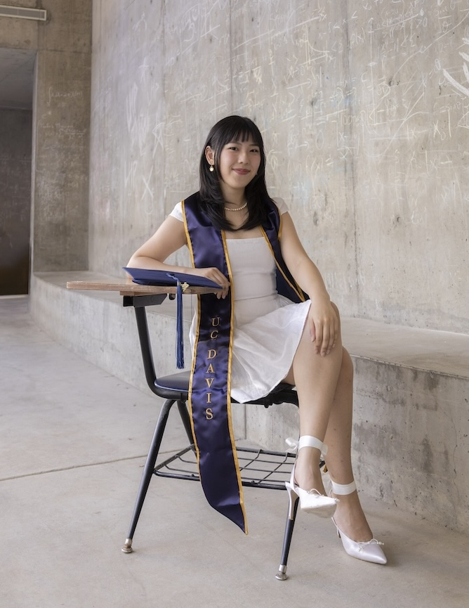
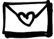
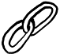

about me
Nice to meet you! I’m a recent grad in design and cognitive science from UC Davis with a background in research-driven communication design and engagement strategy. I’m an endlessly curious storyteller trained in using quantitative insights to craft campaigns that resonate.
From capturing real moments with event photography to analyzing large-scale datasets to inform student government decisions, my background is broad– but connecting communities by highlighting our shared human experience is what consistently lights me up and inspires me.
Let’s chat! Hit me up with opportunities in creative strategy, your favorite latest music releases, or your local coffee recs.

empark1201@gmail.com
my LinkedInmy design philosophy
curiosity
From overheard conversations to machine learning diagrams, I'm looking for inspiration everywhere. I'm fascinated by the way art touches everything we do, and aim to center interdisciplinarity in my work– I'll never say no to an opportunity to pick up a new skill.
culture
Creative works should be authentic to the people they're meant to serve. My creative process centers co-creation with my audience and users to create products that truly resonate. I'm an avid reader and aspiring polyglot, and I'm drawn to anything that brings me closer to my community.
collaboration
Together we are greater than the sum of our parts. I've worked with developers, data analysts, musicians, physicians, and waste management specialists, and every lesson I take with me forward into my next project. My greatest talent is being able to communicate my process and insights to anyone.
experience
- Restructured admissions and recruitment messaging to target traditionally underrepresented student communities, drawing on past retention data and current student surveys.
- Synthesized survey insights into storyboarding and creative direction for recruitment video campaign reaching 200+ students annually and supporting a 45% offer expansion.
- Developed social media content (Instagram, LinkedIn) and strategy informed by survey data, driving a 65% increase in applications (386 → 635) over two admissions cycles.
- Recruited new research mentors and program donors from the pool of program alumni and the greater UC Davis community through quarterly highlights of student and faculty accomplishments, delivered via Mailchimp.
- Managed ongoing partnerships with recurring campus clients, conducting annual surveys of 350+ respondents in Qualtrics and R to track evolving needs and recommend resource expansion and outreach strategies.
- Designed an interactive dashboard from 4 years of housing data (cost, transportation, satisfaction), turning an internal client report into a public-facing resource for the broader student population.
- Authored policy briefs and presentations, translating complex technical data and insights into actionable reports for policymaker audiences.
- Managed organization's Drupal website and quarterly publishing cadence (3–4 research and software project reports), keeping stakeholders across student government, faculty, and campus partners informed of ongoing work.
- Maintained on-air compliance with FCC broadcasting regulations as a station DJ, ensuring all programming met federal standards and safeguarding the station's license and public reputation during live broadcasts.
- Coordinated cross-campus media coverage of annual music festival (ORMF) between KDVS and Aggie Studios (student-run media agency), managing content scheduling and tailoring interviews to highlight community impact.
- Created podcast by interviewing station leaders and veteran DJs to highlight community impact of KDVS, submitted to 2024 NPR College Podcast Challenge.
- Directed a 4-person creative team to launch data-driven campaigns, growing cohort program applications by 80% in first recruitment cycle under my leadership.
- Sustained triple-digit application volumes for the fellowship program (125+ applicants per cycle) through targeted outreach and brand engagement strategies.
- Implemented feedback loops via interviews and surveys, translating insights into cross-platform design strategies across digital, print, and social.
- Led a rebrand initiative aligning visual identity and messaging with organizational values, strengthening program positioning and stakeholder alignment.
- Conducted evaluative testing of large language model outputs with a focus on bias, suppression, and ethical risks, developing stakeholder personas to capture diverse user experiences and concerns.
- Mapped user journeys across 7 models and 6 social media platforms, identifying harmful content touchpoints to inform governance and safeguard recommendations.
- Co-designed research workflows with an 8-member team, creating replicable testing protocols and usability-inspired evaluation methods to improve scalability.
- Accelerated delivery timelines by 25% by defining a structured 12-week project roadmap, enabling iterative testing and stakeholder-driven refinements.
- Defined project phases and delegated work across a 6-person design team, ensuring deliverables aligned with client marketing objectives, agreed scope, and compressed timelines.
- Served as primary point of contact between clients, designers, and developers, translating technical constraints into clear, actionable recommendations for non-technical stakeholders.
- Mentored junior designers in UX and product development best practices, improving delivery efficiency by week four and increasing consistency and quality across final deliverables.
- Conducted market and audience research to inform updates to an outdated corporate website, identifying opportunities to better align messaging with target customer needs.
- Researched and evaluated digital marketing agencies based on relevant experience, branding alignment, and budget fit, coordinating introductory meetings with company leadership and communicating project scope and expectations.
- Coordinated communication between vendors and commercial clients, gathering updates on service changes and proactively relaying clear, timely information to ensure aligned expectations.
education
University of California, Davis
Sep 2023 - Jun 2026
B.A. Design
B.S. Cognitive Science, Computational Emphasis
Freie Universität Berlin
Jul 2024 - Aug 2024
International Summer School, German Level B2